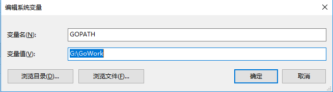
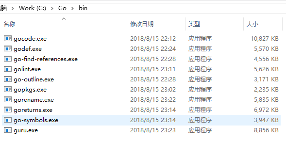

安装golang
https://studygolang.com/dl/golang/go1.10.3.windows-amd64.msi
我用的是win10，直接下载安装就好了，系统会自动增加环境变量
另外还要增加一个工作的目录

如果不设置，默认会在当前用户目录下，有一个go文件夹
如果当前用户设置环境变量，会把你设置的覆盖
vsCode
- 下载安装vs code
- 安装插件“go”
安装go需要的插件
go get -u -v github.com/nsf/gocode
go get -u -v github.com/rogpeppe/godef
go get -u -v github.com/golang/lint/golint
go get -u -v github.com/lukehoban/go-find-references
go get -u -v github.com/lukehoban/go-outline
go get -u -v sourcegraph.com/sqs/goreturns
go get -u -v golang.org/x/tools/cmd/gorename
go get -u -v github.com/tpng/gopkgs
go get -u -v github.com/newhook/go-symbols
最后编译出来的文件如图所示

备注
安装过程中，有几个东西没法安装，解决方法如下
1.在src下新建golang.net/x目录
2.checkout 库
git clone https://github.com/golang/tools.git tools
git clone https://github.com/golang/lint.git lint
3.安装没安装的库
go install xxx
go install golang.org/x/lint/golint
追求卓越 成功就会在不经意间追上你
评论加载中